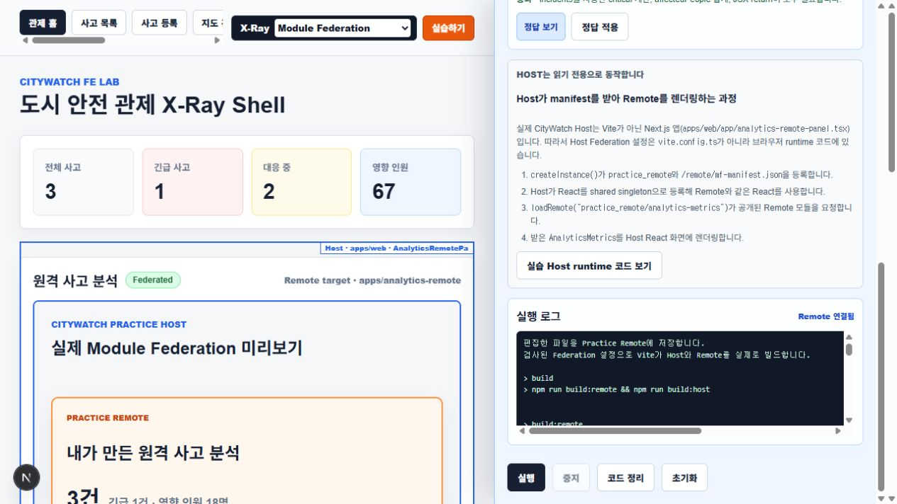

01 / CITYWATCH FE LAB
기술을 적용하고,
구현한 과정을 보여주기 위해
하나의 주제 안에서 상태 관리, 지도, 실시간 통신과 앱 구조를 직접 구현했습니다. 화면의 기능이 어떤 코드와 연결되는지 살펴보고, 일부 주제는 설정을 바꿔 직접 실행해 볼 수 있도록 만들었습니다.
React와 Next.js를 바탕으로 도시 안전 관제 화면을 구성하고, 그 안에 적용한 프론트엔드 기술을 탐색하는 학습 프로젝트입니다.
02 / X-RAY
화면에서 기술을 고르고
구현 경계를 살펴봅니다.
X-Ray는 기술이 적용된 화면 영역과 코드의 연결을 보여주기 위해 직접 만든 기능입니다. 선택기에서 관점을 고르면 관련 화면과 구현 영역을 확인할 수 있습니다.
- 기술 선택
- 관련 화면 확인
- 구현 영역 확인
- 코드 살펴보기
예를 들어 Redux를 선택하면 사고 목록 화면으로 이동해 상태가 사용되는 영역을 살펴볼 수 있습니다.
선택할 수 있는 기술: FSD-style, Module Federation, Monorepo, OpenLayers, R3F / Three.js, WebSocket / Polling, REST API, Redux, Zod, 대량 데이터 성능, SSR / Hydration
03 / HANDS-ON PRACTICE
설정을 바꾸고
실행 결과까지 확인합니다.
두 주제는 브라우저에서 코드를 작성하고 빌드 결과를 확인하는 실습을 제공합니다.
Module Federation
Remote 설정과 컴포넌트를 수정한 뒤 빌드하고, 생성된 모듈이 실습 Host에 로드되는 결과를 확인합니다.
Monorepo
workspace와 공통 패키지의 설정, export와 import를 작성하고 빌드한 화면에서 패키지 사용 결과를 확인합니다.


실습 코드는 WebContainer의 별도 환경에서 빌드되며, 결과는 격리된 실습 화면에 표시됩니다.
04 / IMPLEMENTATION
기술별 구현 살펴보기
관심 있는 기술을 펼쳐 적용한 화면과 구현 방식을 확인할 수 있습니다.
상태 관리와 데이터 검증
Redux: 목록의 필터를 조회 조건으로 변환하고, 선택한 사고 ID를 목록과 지도에서 공유합니다.
REST API: 사고 목록과 상세 조회, 등록과 상태 변경을 Route Handler로 구현했습니다.
Zod: 사고 등록 입력 검증에 같은 스키마를 화면과 API에서 사용합니다.
지도와 3D 시각화
OpenLayers: 사고 좌표를 지도에 마커로 표시하고 선택한 사고를 목록과 지도에서 공유합니다.
R3F / Three.js: 사고 위치와 위험도를 3D 공간의 기둥 위치와 높이, 색상으로 표현합니다.
실시간 통신과 연결 복구
WebSocket / Polling: WebSocket으로 이벤트를 수신하고 연결이 닫히면 마지막 이벤트 ID를 기준으로 HTTP Polling을 이어갑니다. 수신 데이터의 형식도 확인합니다.
화면 구조와 렌더링
FSD-style: 화면을 위젯, 기능과 도메인 단위로 나누고 X-Ray로 책임 경계를 확인합니다.
SSR / Hydration: 사고 상세 데이터를 서버에서 조회해 전달하고 브라우저에서 상호작용을 연결합니다.
대량 데이터 성능: 목록 가상화와 지도 클러스터링으로 대량 사고 데이터의 표시 방식을 살펴봅니다.
패키지와 런타임 연결
Monorepo: 앱과 UI, API 타입을 workspace로 분리해 사용합니다.
Module Federation: Next.js Host가 Vite Remote의 manifest를 등록하고 분석 모듈을 런타임에 불러옵니다.